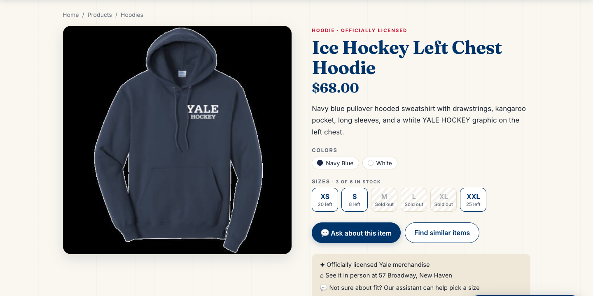
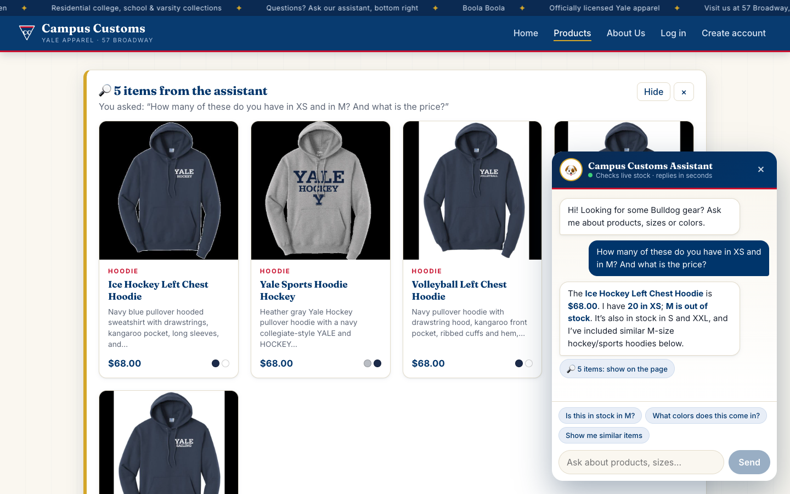
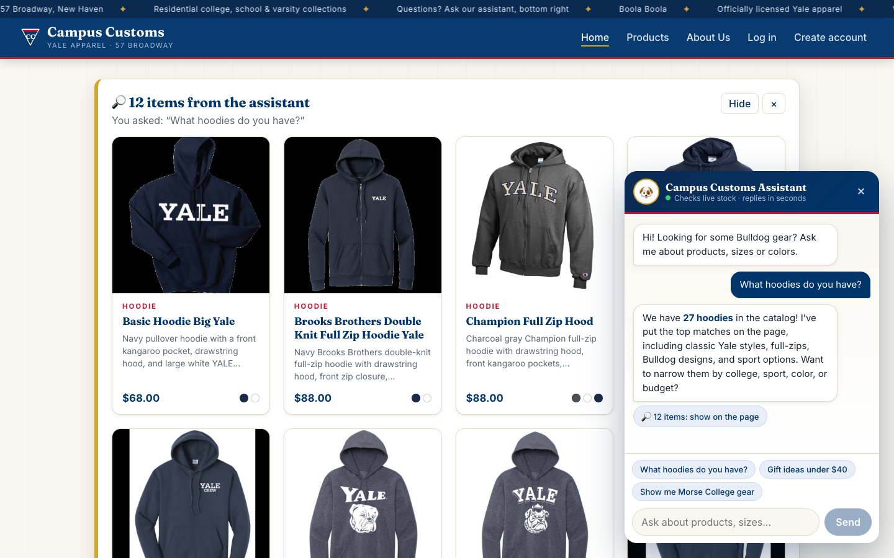
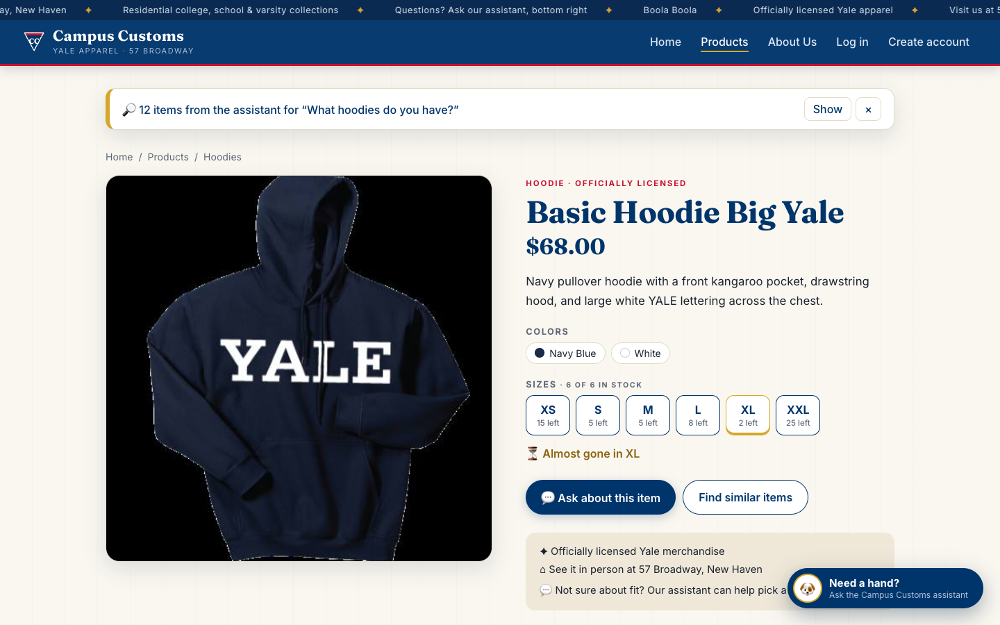
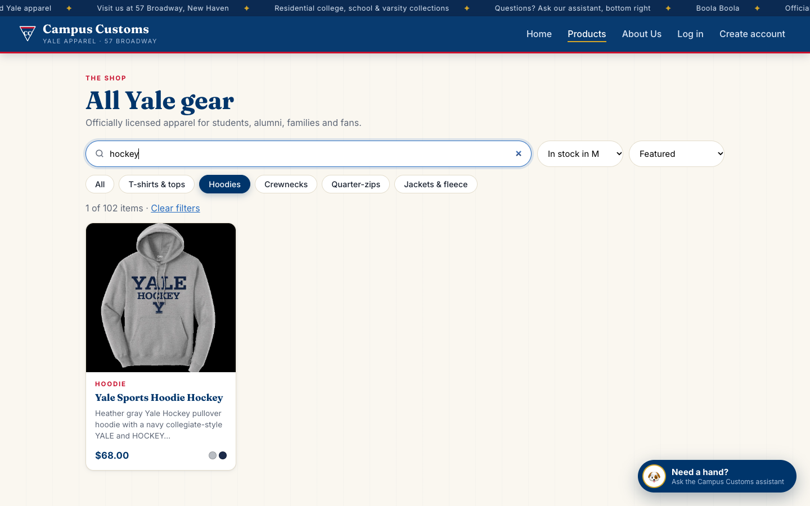

1. Chat checks inventory level PASS
The chat's stock and price answer for the Ice Hockey Left Chest Hoodie matches the database exactly, including the sizes that are sold out.
Ground truth, queried from data/campus_customs.db (catalogue + inventory) at test time:
| product_id | price | XS | S | M | L | XL | XXL |
|---|---|---|---|---|---|---|---|
| ice-hockey-left-chest-hoodie | $68.00 | 20 | 8 | 0 | 0 | 0 | 25 |

Shopper (on that product page): "How many of these do you have in XS and in M? And what is the price?"
Assistant: "The Ice Hockey Left Chest Hoodie is $68.00. I have 20 in XS; M is out of stock. It's also in stock in S and XXL, and I've included similar M-size hockey/sports hoodies below."
Assistant: "The Ice Hockey Left Chest Hoodie is $68.00. I have 20 in XS; M is out of stock. It's also in stock in S and XXL, and I've included similar M-size hockey/sports hoodies below."

find_similar_products and put the item plus 4 similar hoodies that are in stock in M on the page (5 cards), instead of stopping at "out of stock."2. Dynamic search-result cards PASS
A category question in the chat puts matching products on the website itself as product cards (image, name, price, short info), and each card still opens the single-item page.
Shopper (home page): "What hoodies do you have?"
Assistant: "We have 27 hoodies in the catalog! I've put the top matches on the page, including classic Yale styles, full-zips, Bulldog designs, and sport options. Want to narrow them by college, sport, color, or budget?"
Assistant: "We have 27 hoodies in the catalog! I've put the top matches on the page, including classic Yale styles, full-zips, Bulldog designs, and sport options. Want to narrow them by college, sport, color, or budget?"

product_ids, and the front end rendered them as cards at the top of the home page ("12 items from the assistant"). All are hoodies, from Basic Hoodie Big Yale to The Forest School Hoodie. The "27 hoodies" total is honest: the DB has 27 products whose type or name contains "hood". Card prices and descriptions come from the DB, not from the chat text.
/products/basic-hoodie-big-yale with the large image, full description, price, colors and stock per size, the same page as in Problem 3. The chat results collapsed to a bar at the top ("Show") so the shopper can get back to the list.3. Usability feature (Problem 9): search + filters on the Products page PASS
Shoppers can narrow the 102 products to exactly what they can buy. "Hoodies" + "hockey" + "In stock in M" leaves only the hockey hoodie that is actually available in M.

/products?cat=Hoodies&q=hockey&size=M), so the view can be shared or bookmarked.